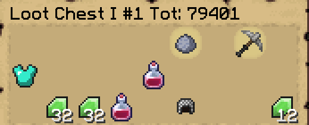
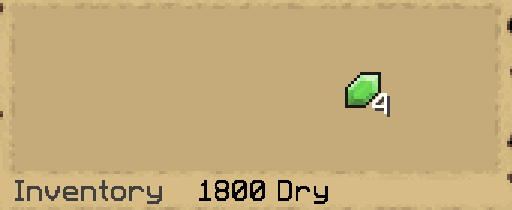

Every time you open a chest, the mod displays the amount of chests you have opened this session and your total chestcount.
You can also see how many chests dry you are
And with the command /lastmythic you can see info about the last mythic you found. The info includes the type of mythic and level range, it also includes your chestcount when you found the mythic and how many chests dry you were. It tells you the coordinates of the chest and also how many chests dry you are currently